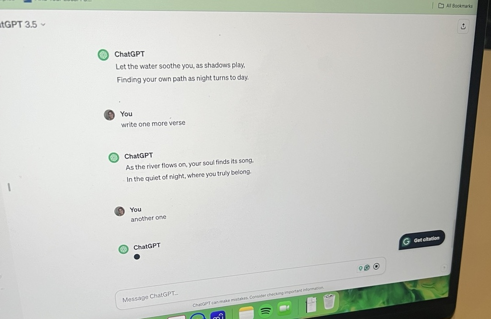

WEEK 5
0804 - 1404WORK PROGRESS
Artwork 4: Unreal Game

Unreal Game Mood Board/Inspirations
Pink, Dreamy, Surrealism, Flowery, Abstract art,
Chill House Tracks, Sound effects of recordings, vocals, AI voices
These are the inspirations/mood boards for the game environment. The keywords are pink, dreamy, surrealism, flowers, abstract, or alien feelings but not spooky or scary, more fairy-like.
For the landscape design, I want to ensure it captures a minimalist, grand, and vast feel while also being very pink. The pink grass will be spread out throughout the entire landscape, possibly with some wind simulations to make it more realistic and interesting.
The Game Design Overview:
Goal: Finding 5 boxes with a random number of 2 types of roses (pink and chrome). Players will have a health bar, and any interactions will either increase or decrease the value.
Players can interact with other objects and NPCs, and they will all affect the health bar.
There are two environments built in the game. T
he first one is where the game starts. It’s pink, full of plants, roses, and dreams. There are 4 locations within the map with statues, objects, and other plants to interact with:
1. Arc, open building
2. Cliff Rocks, Cactus
3. Mirrors
4. Lake with a portal to the other side
There is a portal to the other environment located in the first one.
The other one is underwater, chrome, dark, with the same objects from the other world but in a darker, distorted form.
The boxes will be spread out throughout both environments, as well as the interactive elements.

The first landscape was designed utilising the basic map for games in Unreal. To spawn the grass on the entire landscape, Procedural Content Generation (PCG) was used. PCG worked great in a small area until it was scaled out as the map's size increased, and it crashed. I'm assuming there were too many mesh triangles for the computer to handle. But since I wanted to have high-quality grass on the entire land, I had to find an alternative method.


I rebuilt the landscape using an open-world approach in which the whole map is divided into sections called partitions, and it reads the location of the player and only generates the mesh around the player. It was definitely working better; it did not crash. However, it became very laggy. I tried downscaling the textures and made sure to use Nanite for effective performance. However, the FPS dropped to around 1-2, when it is recommended to have a minimum of 20 to run a game. There were probably still too many polygons and textures for PCG to handle to the point where I could not possibly edit anything.
I tried switching the grass types, the total number of models, and modifying project settings, but nothing really worked well.
I really wanted to have dense grass all over the landscape, and I was determined to find a solution, which I'm sure exists. I’ve spent several days trying to find out the solution. However, due to time constraints, I decided to move on from implementing grass and pay more attention to the actual landscape material instead to make it look more sophisticated and polished.

After the landscape, I worked on implementing Mintie as the third-person player.
Also, I've been trying to fix the hair issue, and it looks like I might have fixed it! It's definitely working much better than before, with almost no hair going inside the body at all.
INDUSTRY ENGAGEMENT
Digital Future Forum
12:00-4:00pm, 10th April
It was great to listen to speakers exploring the topic of how to incorporate AI into our workflow as artists and designers. It seemed like the first few sessions were coming from the perspective of educators in Design and Art. What stood out to me was that it is important to think about WHY we are using AI when creating art, not so much about HOW. It is true that AI technology has become a prominent tool for many artists in their works, and it is almost impossible to stop students from using AI with their works if they choose to. The question is not really about whether we should use the technology or not, nor how we utilise the tool, since there are many different approaches to incorporating them into our art. But what’s crucial is to really try to determine WHY we are using them if we are bringing them into our workflow as artists.
It was an interesting question, and if I’m incorporating AI technology into my workflow, I would use it either as a time-efficient tool, such as auto-UV mapping, auto-chords arpeggio generations, and auto-code generation, or as an inspiration/prototyping tool to generate visuals using DALL·E 2, Midjorney, or Firefly.
Collaboration/Jam with an artist/musician
2:00-6:00pm, 12th April

With my friend whom I met recently, we discussed doing collaborations briefly, and we decided to produce one track together and release it once it’s done. We’ve worked together to create a track using voice as the main medium, and we wanted to incorporate some AI technology, so we asked ChatGPT for the lyrics by giving some prompts.
The lyrics we got out of feeding ChatGPT a bunch of different prompts are below:
"Drift with the stars, where dreams softly gleam,
Follow the currents, into your own dream.
Drift with the stars.
The water soothes you, where shadows play,
Find your own path, as night turns to day.
Drift with the stars."
We ended up using one MIDI pad because it sounded so beautiful with our voices! But except for that one, everything else was made just using layers of voice. We couldn’t finish the track, so we will meet again soon to finish it so it can be released!
SOCIAL MEDIA
I shared “my pink hair failure story” with screenshots of the hair modeling, troubleshooting, and some footage to show how it’s glitching. This was my first custom hair, and Mintie does not have this hair anymore. She has new black hair.
Second one is a collaborative post with one of my friends. This was my first collaborative post on Instagram. After we were done for the day producing the track, we gathered all the video recordings we took and edited them into a short work-in-progress video. I really enjoyed the collaboration! We are keen to continue and finish the track.
The last post was more renders of Mintie. It was still the first video. I was saving the rest of the renders for later posts.
Posting regularly, three times a week is definitely challenging, but I think it really helps in connecting with the industry and sharing inspirations with fellow colleagues.
Since I’m using hashtags, I was able to also communicate with other artists outside RMIT.
So, as much as it’s challenging to keep it up, it does help the work to get out there!